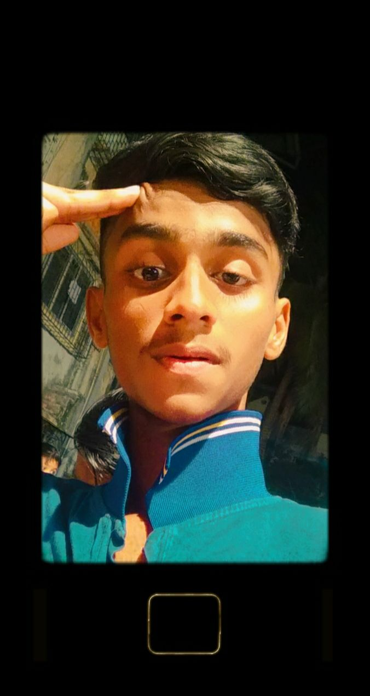
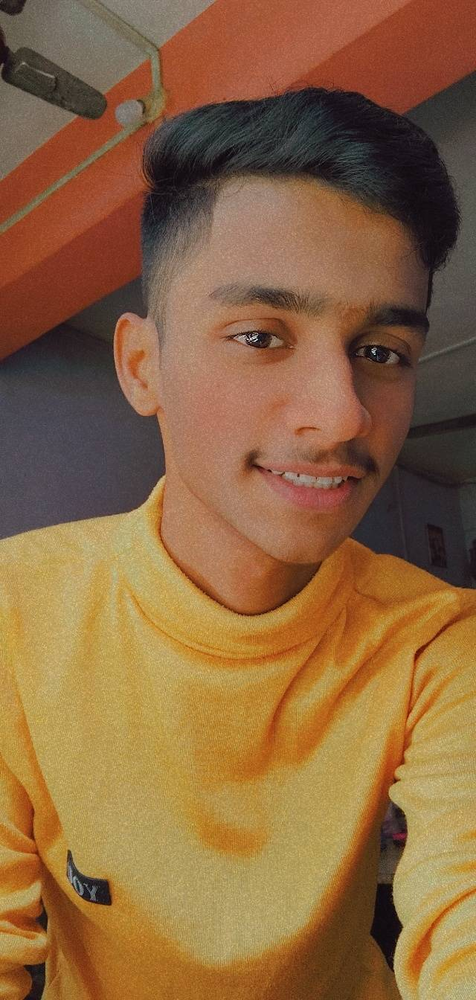
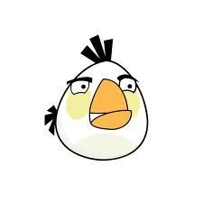
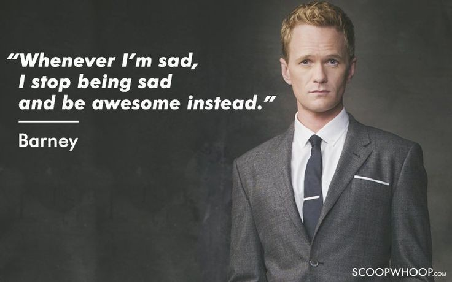
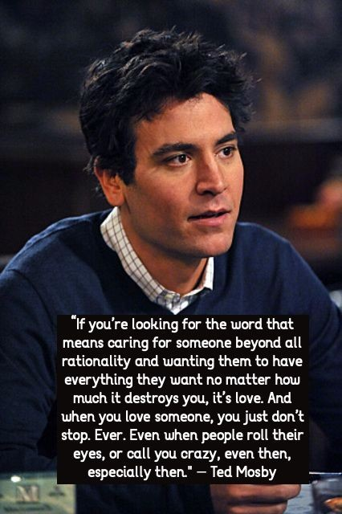
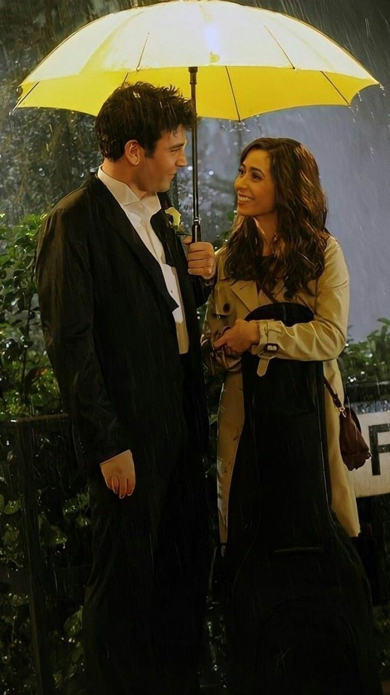
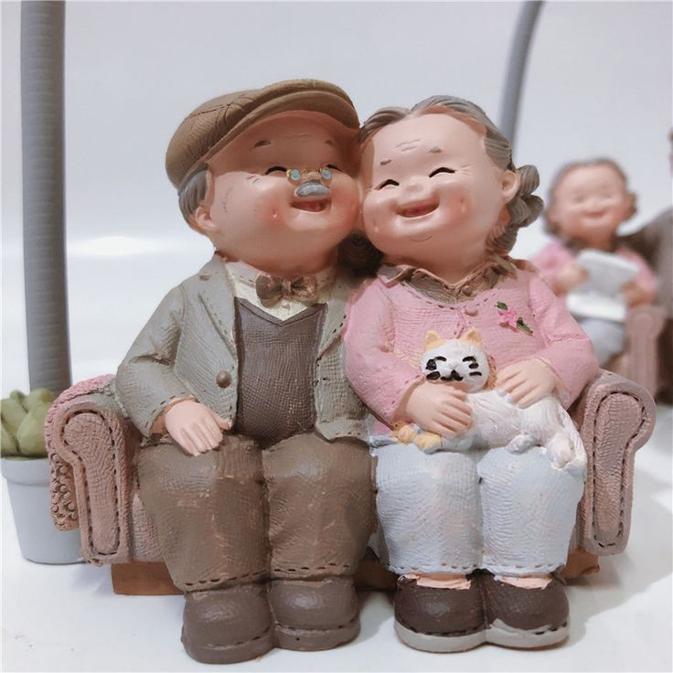
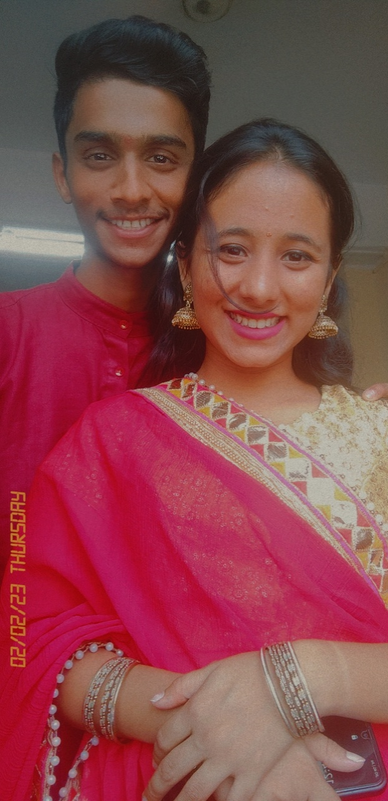

WHY ALWAYS YOU???
I know aaisa kar chuka hoon mai but koi option nhi tha ji phele plan kuch aur tha ab kuch toh karna hoga so dimaag mein phele yeh aaya ...

Back To the Topic Why Always you...
Yaha phele mai yehi bolunga ki Tujhe always phele rakhne ka koi proper reason ho hi nhi sakta you owned that place.. but tu aaise toh maan ne nhi wali tu so kuch rough reason deta hoon joh tujhe samjha sakta hoon !!
The changes tune mujhe mein laya hai

Yeh image exact tere milne se 1-2 weeks phele ke hai dikh rha hai yeh banda seriously tensed tha khud se haar gaya tha like ussne soch liya tha ab kuch nhi karna jisse khud ko khushi mile like joh ho rha hai hone do khud kuch nhi karna...

To this Samjh rhe ho difference kitna bada hai ... like uss time tere todhe efforts ne mujhe itna change kiya i never thought ki mujhe koi aake itna change karega i swear bcz you know past relationship bohot rahe hai lekin itna kisi ne change nhi kiya mujhe in a positive way joh mujhe jeena sikha diya the whole credit goes to you Kriti ... Like yeh dekh ke samjhta hai tera milna mujhe likha tha Bohot hi aachese !!
You tought me many things..
You know mai ne masti masti mei tera naam TEACHER JI rakha tha but Aap ke ky kehne aap saach mein meri teacher bann gayi aur aapne bohot kuch sikha diya mujhe ... Like hamesha kuch moment enjoy karne ke liye kuch baadi baat nhi honi chahiye.. choti choti baatein bhi koi bhi moment aacha bana sakti hai bas enjoy karna aana chahiye ... dusri baat hamesha problem solve karna ho aaisa hi nhi hai kabhi kabhi kuch der usse time deke bhi solve ho sakta hai ... and the last and my fav is You.. the way you manage or handle me is just awesome like kabhi kabhi tension aa jata hai tab dimaag mei aata hai kriti rehti toh ky karti ... bas fir joh mind mei aata hai kar deta hoon and it works
I know tu Gussa hai mujhse ... But let me keep my side

Hey Angry Bird ( tere liye white wala liya specially..) so manta hoon kriti bohot galtiya karta hoon mai hamesha tujhe hurt karta hoon hamesha tere expectations todta hoon... but kriti mai woh kabhi jaanbhuj ke nhi karta mai kuch bhi aacha karne jau woh hamesha ulta nhi toh mess ho jata hai ky karu... hamesha galtiyo se sikhane ki hamesha try karta hoon but then too fails ... but mujhe meri ek baat aachi lagti hai mujhe kabhi tujhpe give up karne ka dimaag mei nhi aaya . Chal manta hoon mai yeh sab karta hoon but kriti you know me bohot aache se like mai aaisa kuch intensionally karunga ky ?? jis se tujhr hurt ho ?? kriti Tujhe pata hai mai mess karta hoon tu samjhti hai toh aaise mujhse durr baghne se ky hoga tu samjhle ki mai tujhe hurt karne ka soch bhi nhi sakta hai soch woh aaise hi hai ekdum pagal.Just think that ki ghum firke woh mere pass hi aayega aur kaha hi jayega ?! Like woh hamesha se aaisa hi hai means mere bolne se phele tu bol deti h toh mere kuch karne se phele kyu nhi khud samjh leti h ki mai ky karna chahta hoon like mai qb nhi bol sakta tu mujhse expectations rakh yaa maat but itna toh bol hi sakta you know me ... aur mai ky karunga koi situation mei woh bhi .. rahi baat share karne ki toh kriti you know siddhi ke wajha se confidence kho diya tha mai ne woh confidence ab tak kahi na kahi mujhmein mein nhi aaya hai but saach mein tujhse baatein share karta hoon mai yaar ... jitni aryan se share karta hoon utna sab tujhse bhi share karta hoon .. nahi aacha lagta tujhse kuch bhi baat chupane ke liye saach mein
Chal kuch naye style mein explain karte hai FT.HOW I MET YOUR MOTHER..
Barney Stinson hai yeh i love this man Actually he is a Play boy but the way he live is just awesome like mujhe isse jaisa bana tha bcz The Quote he says...

But mujhe isski harakto pe nhi jana like mera flirt karna is normal mera koi aim nhi hota kisi ladki ke liye But aap se milke ky batau ek hi baat aati hai I want to be Ted Mosby
This man prove that waiting for one girl is Absolutely fine until you believe in her .. he says

And its worth to wait ...

Moral of the story :- Mai tujhe kisi relationship yaa title ke liye force nhi kar rha Naughtyy you mean alot to me .. tera hona mere life mei matter karta hai jab tu nah ho uss mei woh kuch nhi hai seriously nothing ... kriti is not just an ordinary person she is everything for me ... aur jab woh nah ho toh usska wait karne ke liye koi aaitraz nhi hai mujhe ... tera mujhse nah bolna is like living in a hell for me ... tujhse baat kiye bina sukoon milta hi nhi hai aur yeh addiction mujhe seriously bohot pasand hai ...
In the end ...
I know tu forever mei nhi manti but mai tijhe itna hi bolunga jab tak tere saath hoon tujhe khush rakhne ke liye joh kuch bhi mujhse ho sakta hai woh sab karunga mai aur joh kuch nhi kar sakta woh sikhenge karunga but karunga bcz just best friend nhi tujhe sab kuch mana hai mai ne kriti i repeat sab kuch... btw jab tak mai tere saath hoon usska matlab yeh tha

Yaha tak ... i mean that bcz I love you the most kriti ... the most tujhe pata hai dimaag mein ab hazaro khayal chal rhe hai yeh likhu woh likhu but bohot confuse hoon mai ab like bohot kich batana hsi tujhe but express nhi kar paa rha sorry ....

Btw I love this so much ... nazar nah lage hum mein...
I know iss mei se songs khayab hai bohot nah woh missing nahi hai usska time bhi aayega